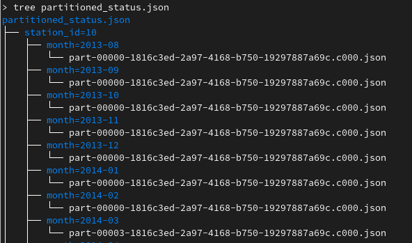
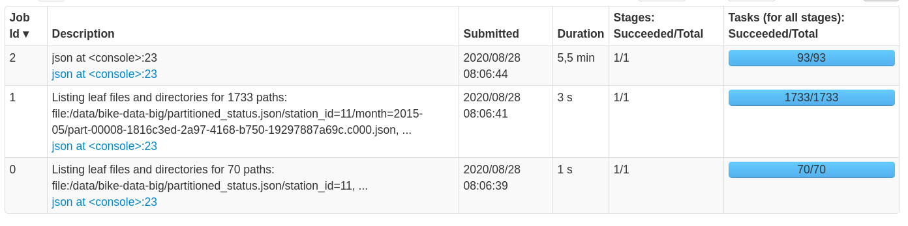
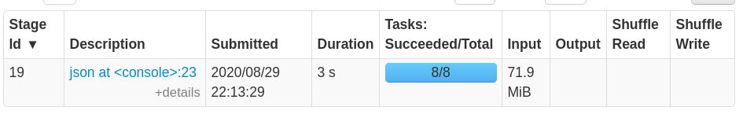
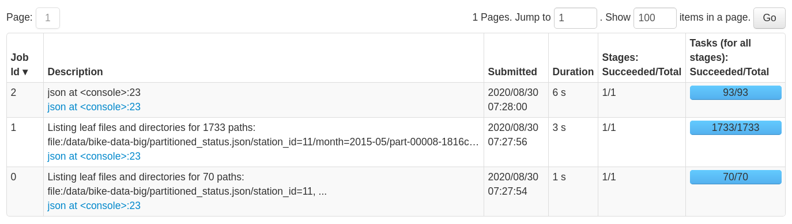

How to optimise loading partitioned JSON data in Spark ?
In this tutorial we will explore ways to optimise loading partitioned JSON data in Spark.
I have used the SF Bay Area Bike Share dataset, you can find it here. The original data (status.csv) have gone through few transformations. The result looks like:

Loading from partitioned JSON files
We will load the data filtered by station and month :
val df1 = spark.read
.json("file:///data/bike-data-big/partitioned_status.json")
.filter("station_id = 10 and (month in ('2013-08', '2013-09'))")
Despite the fact that the code above does not contain any action yet, Spark starts three jobs that took few minutes to complete (on a local setting, with 8 cores and 32 Gigs or RAM): 
- Job 0 and Job 1 : Spark (and more specifically the Data Source API) is listing the content of the root folder and its subfolders, in order to discover the partitioning columns and map each column value to a file path. The result of this job is an
InMemoryFileIndexobject that will be used later to access the data. - To do partition discovery, Spark does not systematically trigger jobs; this depends on a threshold that is defined in configuration, namely
spark.sql.sources.parallelPartitionDiscovery.threshold(default value 32). If the number of paths that constitue the data is below this threshold, Spark will achieve partition discovery directly on the driver, otherwise, Spark will launch parallel jobs, as we have seen in our case. You can take a look at the implementation of this logic here. - Job 2 : Spark is infering schema by scanning the entire dataset.
Let’s explore a little bit further, by taking a look at the physical plan generated by Spark for this dataframe :
== Physical Plan ==
FileScan json [bikes_available#7L,docks_available#8L,time#9,station_id#10,month#11], Batched: false, DataFilters: [], Format: JSON, Location: InMemoryFileIndex[file:/data/bike-data-big/partitioned_status.json], PartitionFilters: [isnotnull(station_id#10), (station_id#10 = 10), month#11 IN (2013-08,2013-09)], PushedFilters: [], ReadSchema: struct<bikes_available:bigint,docks_available:bigint,time:string>
- You can see that the physical plan makes use of both the
InMemoryFileIndexand theReadSchemathat have been built by the Data Source API in the preceding steps. - Also, you can see that the
InMemoryFileIndexis built on top of the root folder (file:/data/bike-data-big/partitioned_status.json). Despite the fact that we have provided a filter, Spark (version 3.0) did not push the filter down to be used in theFileScanoperator to do partition pruning.
So far, we have identified three different issues related to loading partitioned JSON data in Spark :
- Issue 1 : Spark will run partition discovery jobs each time we load the data (depends on the number of folders).
- Issue 2 : Also, Spark will launch a job that will scan the whole dataset in order to infer the schema.
- Issue 3 : Predicate pushdown is disabled, although Spark has collected all the meta-data needed.
In the next section, we’ll try to cover some solutions to these issues.
Solution 1 : Using basePath
The first approach is to reduce the scope of the data by explicitly specifying the folders of interest:
val df2 = spark.read
.option("basePath", "file:///data/bike-data-big/partitioned_status.json")
.json("file:///data/bike-data-big/partitioned_status.json/station_id=10")
.filter("station_id = 10 and (month in ('2013-08', '2013-09'))")
- Since we are only interested in data from station n°10, we pass the sub-folder that contains the data of this station to the JSON reader.
basePath: this option will override the path used by Spark in partition discovery. If we do not providebasePathoption, the default base path will be the path passed to the JSON reader (…/partitioned_status.json/station_id=10), which will result in thestation_idcolumn not being added to the schema.
By applying this method, loading the data becomes significantly faster: 
Even with this method, predicate pushdown is still disabled. But since we pre-filtered the data by specifying a sub-folder, the InMemoryFileIndex is built on top of that folder :
== Physical Plan ==
FileScan json [bikes_available#184L,docks_available#185L,time#186,station_id#187,month#188] Batched: false, DataFilters: [], Format: JSON, Location: InMemoryFileIndex[file:/data/bike-data-big/partitioned_status.json/station_id=10], PartitionFilters: [isnotnull(station_id#187), (station_id#187 = 10), month#188 IN (2013-08,2013-09)], PushedFilters: [], ReadSchema: struct<bikes_available:bigint,docks_available:bigint,time:string>
Solution 2 : Specifying a sampling ratio
By default JSON data source will try to infer schema by scanning the entire data set. There is an option called samplingRatio that we can tweak in order to make Spark scan a part of the data.
val df3 = spark.read
.option("samplingRatio", 0.001)
.json("file:///data/bike-data-big/partitioned_status.json")
.filter("station_id = 10 and (month in ('2013-08', '2013-09'))")

- Partition discovery jobs are still there, but the schema inference job is significantly faster, because we are scanning only 0.1% of the total data set instead of 100% by default.
Solution 3 : Accessing via unmanaged table
Both solutions presented so far reduced the time of schema inference, but did not provide a solution to enable predicate pushdown. This section will give a solution that will resolve the three issues altogether.
We will create an unmanaged table on top of the JSON data, and will load and query the data from that table :
spark.sql("CREATE TABLE IF NOT EXISTS sf_bike_status USING JSON OPTIONS (path 'file:///data/bike-data-big/partitioned_status.json')")
CREATE TABLEcommand will launch partition discovery and schema inference in the same way as we have seen before.- The metadata collected will be stored in the Spark catalog, and reused whenever the data is accessed.
One last step, before we can query the data, we need to call MSCK REPAIR TABLE in order to register the existing partitions in the catalog:
spark.sql("MSCK REPAIR TABLE sf_bike_status")
- This command is described in more detail here.
From now on, we can query the data using the unmanaged table:
val df4 = spark.read
.table("sf_bike_status")
.filter("station_id = 10 and (month in ('2013-08', '2013-09'))")
- There was no need to infer the schema, because it has been loaded from the catalog.
- Compared to reading directly from JSON file, the loading time is reduced from a few minutes to sub-second.
What about predicate pushdown ?
df4.expalin()
== Physical Plan ==
FileScan json default.sf_bike_status[bikes_available#0L,docks_available#1L,time#2,station_id#3,month#4] Batched: false, DataFilters: [], Format: JSON, Location: InMemoryFileIndex[file:/data/bike-data-big/partitioned_status.json/station_id=10/month=2013-08, f..., PartitionFilters: [isnotnull(station_id#3), (station_id#3 = 10), month#4 IN (2013-08,2013-09)], PushedFilters: [], ReadSchema: struct<bikes_available:bigint,docks_available:bigint,time:string>
- As you can see in the
InMemoryFileIndex, reading the data via a table has enabled predicate pushdown. This leads to improvement in read performance.
It is worth saying that even when reading from a table, partition discovery is still there. But, since we have predicate pushdown enabled, the partition discovery is limited to the scope of the paths covered by the filter. In our case, the partition discovery did not trigger Spark jobs, because the number of paths (2 paths after predicate pushdown) is below the parallel discovery threshold (default value is 32), as discussed in the first section.
Conclusion
Reading partitioned JSON files (or even partitioned CSV files with inferSchema=true) can take a significant amount of time, during which Spark does two things: partition discovery and schema inference.
The other important issue we have identified is that Spark does not apply predicate pushdown optimisation when reading from JSON partitioned data (as far as version 3.0.0).
We have explored a few ways to handle these issues, and the most effective solution was to create an unmanaged table on top of the JSON files. However, there is one problem with this solution: we need to call MSCK REPAIR TABLE in order to update the catalog, whenever the data is updated.
Thank you for reading this,
You can find the code in the following Gist :